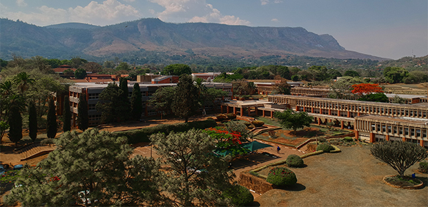

The University of Malawi (UNIMA) is the oldest and largest public university in the country, founded in 1965. It is based in Zomba, a city long associated with Malawi's academic and colonial history, and operates today as a leading center for both research and teaching. Students can pursue undergraduate and postgraduate qualifications either through in-person study or through the university's e-learning programs.
UNIMA started small, with an initial intake of just 90 students, and expanded over time as it took on a number of constituent colleges located across Malawi. That changed in May 2021, when those colleges were separated out and became their own independent universities. The original campus in Zomba, known as Chirunga, kept the UNIMA name and continues to operate as the flagship institution.